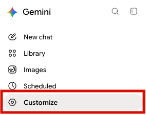
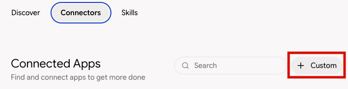
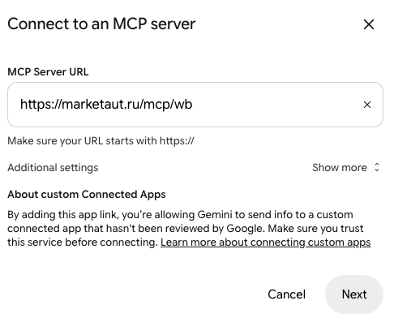
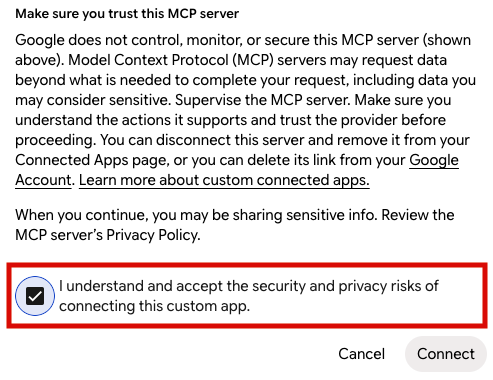
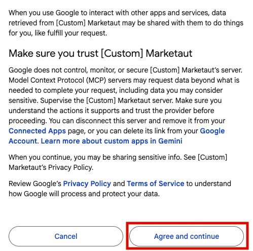
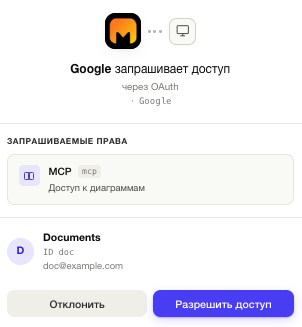
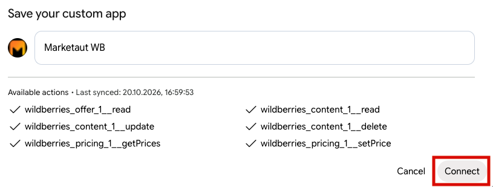
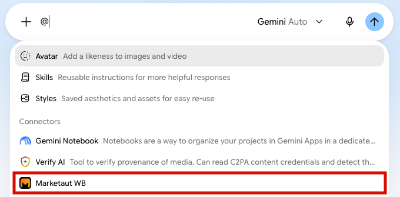
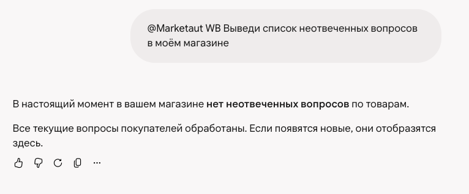
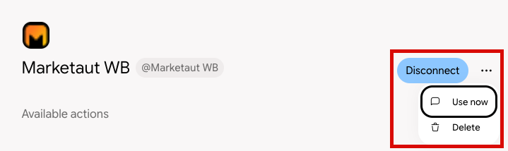

Общая информация
В этом разделе описан процесс подключения Gemini к платформе MarketAut по протоколу MCP.
После подключения Gemini сможет использовать инструменты и данные, доступные в вашей диаграмме MarketAut, напрямую из диалога.
Перед началом подключения убедитесь, что:
- аккаунт Wildberries создан и настроен — Настройка аккаунта;
- диаграмма создана, настроена и запущена — Создание и запуск диаграммы;
- получен MCP-адрес на домашней странице MarketAut — Где найти MCP-адрес.
Важно
Добавить собственный коннектор можно только в веб-версии Gemini с английским интерфейсом. Откройте страницу коннекторов по ссылке gemini.google.com/customize/connectors?hl=en.
Если браузер предлагает перевести страницу на русский, откажитесь: в переводе кнопка добавления не отображается.
Подключение
-
В боковом меню Gemini выберите Customize;

-
На вкладке Connectors нажмите + Custom;

-
В поле MCP Server URL вставьте MCP-адрес с домашней страницы MarketAut, например
https://marketaut.ru/mcp/wb, и нажмите Next;
-
Установите флажок I understand and accept the security and privacy risks… и нажмите Connect;

-
В окне связывания аккаунтов нажмите Agree and continue;

-
В окне авторизации MarketAut нажмите Разрешить доступ;

-
Введите любое удобное название, например
MarketAut WB, и нажмите Connect.

После подключения MarketAut появится в разделе Connectors среди активных.
Использование Gemini
Откройте новый чат Gemini, введите @ и в разделе Connectors выберите MarketAut WB.

Затем отправьте запрос, например:
Выведи список неотвеченных вопросов в моём магазине

Если Gemini получил данные из MarketAut — например, показал список вопросов или сообщил, что неотвеченных вопросов нет, — подключение настроено корректно.
Обновление инструментов
Если в диаграмме MarketAut появились новые инструменты или изменились существующие, переподключите коннектор:
- Откройте Customize → Connectors и нажмите на коннектор MarketAut WB;
- Нажмите Disconnect;
- Снова подключите коннектор по шагам из раздела Подключение.
После этого в Gemini появится актуальный список инструментов.
Отключение и удаление коннектора
- Откройте Customize → Connectors и нажмите на коннектор MarketAut WB;
- Чтобы временно отключить коннектор, нажмите Disconnect. Чтобы удалить его полностью, нажмите ⋯ и выберите Delete.

Чтобы подключить коннектор снова, повторите шаги из раздела Подключение.
Если не подключается
Ошибка «Account linking is required to use this custom app». Gemini не получил разрешение от MarketAut. Проверьте, что:
- браузер не блокирует всплывающие окна на gemini.google.com;
- вы вошли в MarketAut в этом же браузере;
- окно авторизации не было закрыто до нажатия Разрешить доступ.
Затем обновите страницу и повторите подключение.
Сообщение «Extensions are unavailable while your Gemini Apps Activity is off». Коннекторы работают только при включённой истории действий. Нажмите Manage Gemini Apps Activity в сообщении и включите сохранение истории.